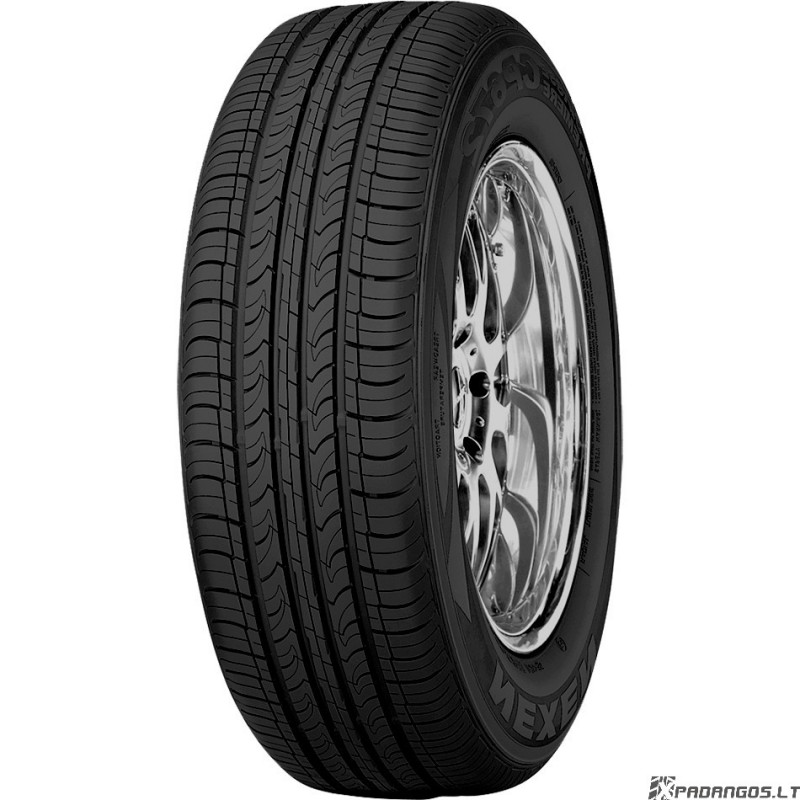

Welcome to automobilių-padangos
Palyginti Automobilių padangos kainas ir pirkti prieinamas | Visos-padangos.lt
2020.10.28 09:17Visos-padangos.lt
Visos kategorijos
Padangos Automobilių padangos Vasarinės padangos Žieminės padangos Universalios padangos Motociklų padangos Čioperių / Kruizerių padangos Enduro padangos Motokroso padangos Keturračių padangos Lenktyninės padangos Motorolerių / Mopedų padangos Supersportinės gatvės padangos Sportinių-turistinių padangos Mikroautobusų padangos Vasarinės padangos Žieminės padangos Universalios padangos Sunkvežimių padangos Vasarinės padangos Žieminės padangos Bekelės / SUV / 4x4 padangos Universalios visureigių padangos Greitkelių padangos Purvo padangos Kitos Bekelė / SUV klasė / 4x4 padangos Specialios paskirties padangos Statybinių mašinų / Miško technikos padangos Ekskavatorių padangos Golfo krepšelio padangos ATV padangos Žemės ūkio padangos Industrinės padangos Dviračių padangos MTB padangos Lenktyninių dviračių padangos Miesto / Turistinių dviračių padangos Vamzdinės padangos Kitos dviračių padangos Restauruotos padangos Vasarinės padangos Žieminės padangos Universalios padangos Visos Padangos Padangos Automobilių padangosGaminys:
Užsakymas Tęsti apsipirkimąPasirinkti filtrai
Daugiau... Mažiau ...Automobilių padangos
Filtruoti pagal:
Atviri filtrai
Indeksas
Krūvio indeksas Visi 55 57 58 62 63 64 65 66 67 68 69 70 71 72 73 74 75 76 77 78 79 80 81 82 83 84 85 86 87 88 88/86 89 90 91 92 93 94 94/93 95 96 97 98 99 100 101 102 103 104 105 106 107 108 109 110 111 112 113 114 115 116 117 118 119 122 Greičio indeksas Visi J (100 km/h) L (120 km/h) M (130 km/h) N (140 km/h) P (150 km/h) Q (160 km/h) R (170 km/h) S (180 km/h) T (190 km/h) H (210 km/h) V (240 km/h) W (270 km/h) ZR (> 240 km/h) Y (300 km/h)Kaina
Markė
Continental (1679) Pirelli (1560) Bridgestone (1516) Michelin (1437) Hankook (1205) Goodyear (1155) Nankang (986) Yokohama (958) Nexen (812) Falken (795) Toyo (699) Dunlop (687) Kumho (669) Maxxis (654) Nokian (578) Vredestein (577) Rodyti visus Goodride (450) Firestone (433) Laufenn (411) Kleber (389) Rotalla (381) BF Goodrich (380) Uniroyal (379) Semperit (334) Barum (321) Fulda (298) Star Performer (270) General (229) Viking (226) Cooper (221) Matador (220) Avon (215) Sava (215) Debica (201) GT Radial (188) Gislaved (185) Michelin Collection (175) Federal (156) Cst (139) Apollo (135) Seiberling (89) Trazano (65) Kontio (30) Powertrac (29) Retro (28) Linglong (25) Windforce (23) Gripmax (22) Lexani (21) Roadx (19) Heidenau (18) Tracmax (18) Radar (16) Sunny (16) American Classic (15) Excelsior (15) Tristar (15) Camac (12) Coker (12) Goform (10) Maxtrek (9) Sailun (9) Torque (9) Achilles (7) Westlake (7) Double Star (6) Fortuna (6) Goldentyre (6) Superia (6) Vitour (6) Accelera (5) Hi Fly (5) Landsail (5) Points (5) Aplus (4) Imperial (4) Kenda (4) Kinforest (4) Lanvigator (4) Blockley (3) Double Coin (3) Infinity (3) Nordexx (3) Premiorri (3) Roadmarch (3) Starfire (3) Taurus (3) Tomket (3) Tourador (3) Waymaster (3) Austone (2) Avon Vintage (2) Diamondback (2) Hilo (2) Kama (2) Keter (2) Milestone (2) Riken (2) Sonar (2) Three-a (2)ES ženklinimas
Degalų klasė Visi A B C E F G Sukibimo su šlapia danga klasė Visi A B C D E F Išorinis riedėjimo triukšmas dBPapildomos Parinktys
LL RF XL Runflat Spikes Visi Padangos su smeigių skylėmisStatyba
D (Diagonal) HR R (Radial) SR VR ZRVidutinė Bandymų Peržiūra
Kainų kategorija
Budget Premium Quality Nuimti visus filtrusKaip pasirinkti lengvųjų automobilių padangas
Automobilio padangų keitimas dažniausiai yra nelaukiamas ir bauginantis procesas, kuris daugeliui žmonių asocijuojasi su papildomomis išlaidomis. Vis dėlto reikėtų atminti, kad šis jūsų pasirinkimas lems tai, kaip jūs važinėsite kiekvieną dieną artimiausius keletą metų. Daugelis žmonių, norėdami pagerinti automobilio išvaizdą ar sutaupyti, pasirenka netinkamų išmatavimų padangas. Tačiau naudojant netinkamo dydžio padangas remonto išlaidos greitai viršys jūsų „sutaupytas“ lėšas. „visos-padangos.lt“ komanda pataria naudoti tik automobilio gamintojų nurodytas padangas. Norėdami sužinoti teisingus savo padangų matmenis ir kaip pasirinkti lengvųjų automobilių padangas pagal automobilį, naudokitės šiais mūsų patarimais.
Lengvųjų automobilių padangos pagal automobilio markę
Patariame naudoti gamintojo rekomenduojamas padangas, nes tokiu būdu padangos dėvėsis ne taip greitai, kuro sąnaudos bus mažesnės, o spidometro parodymai – teisingi. Be to, jūs išvengsite neigiamų automobilio valdymo pasekmių. Sužinoti, kokias padangas rekomenduoja automobilio gamintojas, galite pasižiūrėję savo automobilio vadove arba informacinėje lentelėje, kuri pateikiama prie vairuotojo ar keleivių durelių, po kapotu arba vidinėje kuro bako dangtelio pusėje. Be to, kartais užtenka tiesiog patikrinti, kokių išmatavimų padangos šiuo metu užmontuotos (jei esate tikri kad užmotuotos tinkamų išmatavimų padangos). Tai padaryti galite pažvelgę į užrašus ant padangos šoninės sienelės. Jei norite greitai sužinoti tinkamus padangų išmatavimus, tačiau automobilio šalia nėra, galite pasinaudoti padangų gamintojų svetainių paieškos sistemomis, kur jums reikės įvesti automobilio duomenis (paprastai tai yra markė, modelis, pagaminimo metai ir variklio tūris) ir jums bus pateiktas gamykliniam automobiliui skirtų padangų dydžių sąrašas.
Padangos pagal automobilį
Jeigu jūsų automobilis kelyje valdomas gerai ir jūs tuo patenkinti, pirkite tokias pat padangas kaip ir anksčiau. Nauji automobiliai su vieno ar kito tipo padangomis komplektuojami todėl, kad taip siekiama pabrėžti automobilio privalumus ir kompensuoti jo trūkumus. Naujos padangos kuriamos taip, kad vairuotojams būtų lengviau ir patogiau vairuoti vieną ar kitą automobilį. Tačiau jeigu jus neramina tai, kad važiuojant šlapia kelio danga automobilis nėra itin stabilus, pabandykite atsiminti, kaip jis važiavo su naujomis padangomis. Jei iki tol viskas veikė puikiai, tuomet problemą sukėlė nusidėvėjusios padangos. Jums jas reikės tiesiog pakeisti. Jei negalite rasti tokių padangų, kurios buvo sumontuotos ant naujo automobilio, pardavėjai jums patars ir pasiūlys geriausią alternatyvą. Svarbiausia – pasidomėti prieš perkant. Jei prieš pirkdami padangas įvertinsite savo poreikius ir biudžeto galimybes bei skirsite laiko informacijos apie padangų gamintojus, pardavėjus ir kainų tendencijas paieškoms, padangų pirkimo procesas nebus toks sudėtingas ir gąsdinantis kaip gali atrodyti.
Ką reikia žinoti prieš perkant automobilių padangas
Pirmiausia reikia atminti, kad renkantis padangas jų kaina neturi būti svarbiausias veiksnys. Nors visuomet reikia atsižvelgti į kainą, turite atminti, kad rinkdamiesi geriausias automobilių padangas turite atsižvelgti ne tik į ją. Pigios padangos automobiliams turi būti atitinkamos kokybės, kad užtikrintų saugų jūsų automobilio valdymą. Padangų kaina gali priklausyti nuo jų prekės ženklo ir, žinoma, dydžio. Pigios padangos, jei jas siūlo nepatikimas padangų tiekėjas, kartais gali būti bendro prekės ženklo ar netgi naudotos padangos, o to lengva nepastebėti jas užsisakant. Vienas geriausių resursų ieškant pigių auto padangų internetu, tai naudojimasis internetinėmis paieškos svetainėmis kaip „visos-padangos.lt“. Čia jūs galėsite ne tik rasti pigiausias padangas pagal automobilį, tačiau ir palyginti įvairių pasiūlymų kainas.
Palyginkite iki 4 gaminių:
Rūšiavimas: Populiarumas Geriausias pasirinkimas Pirma mažiausia kaina Pirma didžiausia kaina Vidutiniškai Prekių puslapyje: 5 10 20 30 50 iš 23209 Palyginti Pašalinti iš palyginimoPirelli P Zero Rosso Asimmetrico
10592338 8019227356946 Pirelli 205/50 ZR17 89Y Automobilis - VasarinėsGreitoji nuoroda į pasiūlymą:
Reifendirekt.com 129,2 € E A 71 dB129,2 €
1 pasiūlymai Rodyti visi pasiūlymai Vidutinis testo rezultatas ( 1189 ) Palyginti Pašalinti iš palyginimoDunlop Sport Maxx RT2
11829295 5452000497321 Dunlop 255/45 ZR18 103Y Automobilis - VasarinėsGreitoji nuoroda į pasiūlymą:
Reifendirekt.com 140 € B A 69 dB140 €
1 pasiūlymai Rodyti visi pasiūlymai Vidutinis testo rezultatas ( 278 ) Palyginti Pašalinti iš palyginimoPirelli P ZERO
8478942 8019227190205 Pirelli 245/40 ZR19 94Y Automobilis - VasarinėsGreitoji nuoroda į pasiūlymą:
Reifendirekt.com 159,8 € E B 71 dB159,8 €
1 pasiūlymai Rodyti visi pasiūlymai Vidutinis testo rezultatas ( 574 ) Palyginti Pašalinti iš palyginimoContinental SportContact 6
13402332 4019238685534 Continental 255/30 ZR21 93Y Automobilis - VasarinėsGreitoji nuoroda į pasiūlymą:
Reifendirekt.com 233,3 € E A 73 dB233,3 €
1 pasiūlymai Rodyti visi pasiūlymai Vidutinis testo rezultatas ( 54 ) Palyginti Pašalinti iš palyginimoContinental SportContact 6
13213889 4019238752557 Continental 255/30 ZR22 95Y Automobilis - VasarinėsGreitoji nuoroda į pasiūlymą:
Reifendirekt.com 255,2 € E A 73 dB255,2 €
1 pasiūlymai Rodyti visi pasiūlymai Vidutinis testo rezultatas ( 54 ) Palyginti Pašalinti iš palyginimoDunlop Sport Maxx Race 2
16355539 5452000714077 Dunlop 325/30 ZR21 108Y Automobilis - VasarinėsGreitoji nuoroda į pasiūlymą:
Reifendirekt.com 351,6 € E E 72 dB351,6 €
1 pasiūlymai Rodyti visi pasiūlymai Vidutinis testo rezultatas ( 3 ) Palyginti Pašalinti iš palyginimoContinental SportContact 6
4493380 4019238792638 Continental 285/35 ZR21 105Y Automobilis - VasarinėsGreitoji nuoroda į pasiūlymą:
Reifendirekt.com 276 € E A 75 dB276 €
1 pasiūlymai Rodyti visi pasiūlymai Vidutinis testo rezultatas ( 54 ) Palyginti Pašalinti iš palyginimoContinental ContiSportContact 3
13471926 4019238023169 Continental 255/40 ZR18 99Y Automobilis - VasarinėsGreitoji nuoroda į pasiūlymą:
Reifendirekt.com 174,3 € E B 73 dB174,3 €
1 pasiūlymai Rodyti visi pasiūlymai Vidutinis testo rezultatas ( 1704 ) Palyginti Pašalinti iš palyginimoDunlop Sport Maxx RT2
8945789 5452000681324 Dunlop 255/35 ZR19 96Y Automobilis - VasarinėsGreitoji nuoroda į pasiūlymą:
Reifendirekt.com 196,7 € C A 69 dB196,7 €
1 pasiūlymai Rodyti visi pasiūlymai Vidutinis testo rezultatas ( 279 ) Palyginti Pašalinti iš palyginimoContinental ContiSportContact 5
9531647 4019238548563 Continental 225/50 R17 94W Automobilis - VasarinėsGreitoji nuoroda į pasiūlymą:
Reifendirekt.com 118,4 € C B 71 dB118,4 €
1 pasiūlymai Rodyti visi pasiūlymai Vidutinis testo rezultatas ( 1884 ) Palyginti Pašalinti iš palyginimoContinental SportContact 6
2531490 4019238041187 Continental 245/40 R20 99V Automobilis - VasarinėsGreitoji nuoroda į pasiūlymą:
Reifendirekt.com 245,2 € C A 72 dB245,2 €
1 pasiūlymai Rodyti visi pasiūlymai Vidutinis testo rezultatas ( 54 ) Palyginti Pašalinti iš palyginimoDunlop Sport Maxx RT2
8355961 5452000497352 Dunlop 275/35 ZR18 95Y Automobilis - VasarinėsGreitoji nuoroda į pasiūlymą:
Reifendirekt.com 148,6 € C A 69 dB148,6 €
1 pasiūlymai Rodyti visi pasiūlymai Vidutinis testo rezultatas ( 279 ) Palyginti Pašalinti iš palyginimoBridgestone Turanza ER 300A Ecopia RFT
163926 3286340742610 Bridgestone 205/60 R16 92W Automobilis - VasarinėsGreitoji nuoroda į pasiūlymą:
Reifendirekt.com 97,1 € E B 70 dB97,1 €
1 pasiūlymai Rodyti visi pasiūlymai Vidutinis testo rezultatas ( 1 ) Palyginti Pašalinti iš palyginimoDunlop Sport BluResponse
1675428 5452000736895 Dunlop 215/55 R16 97W Automobilis - VasarinėsGreitoji nuoroda į pasiūlymą:
Reifendirekt.com 103,3 € A B 68 dB103,3 €
1 pasiūlymai Rodyti visi pasiūlymai Vidutinis testo rezultatas ( 3391 ) Palyginti Pašalinti iš palyginimoDunlop SP Sport Maxx TT
1732847 3188649811441 Dunlop 205/55 R16 91W Automobilis - VasarinėsGreitoji nuoroda į pasiūlymą:
Reifendirekt.com 73,7 € C C 67 dB73,7 €
1 pasiūlymai Rodyti visi pasiūlymai Vidutinis testo rezultatas ( 570 ) Palyginti Pašalinti iš palyginimoContinental PremiumContact 6
1937472 4019238772180 Continental 225/40 R18 92Y Automobilis - VasarinėsGreitoji nuoroda į pasiūlymą:
Reifendirekt.com 91 € C A 72 dB91 €
1 pasiūlymai Rodyti visi pasiūlymai Vidutinis testo rezultatas ( 318 ) Palyginti Pašalinti iš palyginimoContinental ContiSportContact 5
2252960 4019238456240 Continental 225/40 R18 92Y Automobilis - VasarinėsGreitoji nuoroda į pasiūlymą:
Reifendirekt.com 89,2 € C B 72 dB89,2 €
1 pasiūlymai Rodyti visi pasiūlymai Vidutinis testo rezultatas ( 1884 ) Palyginti Pašalinti iš palyginimoBridgestone Potenza S001 RFT
2916441 3286340754217 Bridgestone 225/40 R18 92Y Automobilis - VasarinėsGreitoji nuoroda į pasiūlymą:
Reifendirekt.com 117 € E B 72 dB117 €
1 pasiūlymai Rodyti visi pasiūlymai Vidutinis testo rezultatas ( 1140 ) Palyginti Pašalinti iš palyginimoBridgestone Potenza S001
4223100 3286340591911 Bridgestone 235/40 R18 95Y Automobilis - VasarinėsGreitoji nuoroda į pasiūlymą:
Reifendirekt.com 111,8 € E B 72 dB111,8 €
1 pasiūlymai Rodyti visi pasiūlymai Vidutinis testo rezultatas ( 1150 ) Palyginti Pašalinti iš palyginimoContinental CONTIECOCONTACT 5
4419617 4019238521320 Continental 205/55 R16 94W Automobilis - VasarinėsGreitoji nuoroda į pasiūlymą:
Reifendirekt.com 91,4 € B B 72 dB91,4 €
1 pasiūlymai Rodyti visi pasiūlymai Vidutinis testo rezultatas ( 933 ) peržiūrėti daugiau 20 1 2 3 … 1 161 Rūšiavimas: Populiarumas Geriausias pasirinkimas Pirma mažiausia kaina Pirma didžiausia kaina Vidutiniškai Prekių puslapyje: 5 10 20 30 50 iš 23209 Tai yra mokama reklamaVisos kategorijos
Dviračių padangos Motociklų padangos Automobilių padangos Sunkvežimių padangos 4x4 visureigių padangos Mikroautobusu padangos Restauruotos padangos Padangų gamintojai Kaikki myyjät Padangų skaičiuotuvasVisos-padangos.lt
Kontaktinė informacija Naujienlaiškis Legali informacija Gražinimo politika Privatumo politika Bendrosios sąlygos Kainos ir sąlygos Parduotuvės registracija Įėjimas Svetainės schemaTinklaraštis
Tinklaraščio įrašus Pramogos Naujienos Bendra informacija Patarimai ir gudrybės Ratlankiai: iš aliuminio ar plieno? Greičiausias automobilis pasaulyje „Gibbs’ Quadski“ – 72 km/h ant žemės ir vandenyje Padangų registravimas transporto priemonės licencijoje Plačios ir siauros padangos: kokie yra jų skirtumai?TyresNET svetainės
Lietuva
Vokietija Austrija Didžioji Britanija JAV Kanada Australija Belgija Prancūzija Ispanija Argentina Brazilija Portugalija Šveicarija Italija Lenkija Nyderlandai Rusija Ukraina Slovakija Bulgarija Čilė Čekija Slovėnija Rumunija Estija Suomija Graikija Norvegija Latvija Indija Pietų Afrikos Respublika Airija Naujoji Zelandija Malaizija Singapūras Tailandas Kroatija Serbija Baltarusija Kazachstanas Meksika Peru Ekvadoras Vengrija Kinija Turkija Švedija Danija Japonija Lietuva Indonezija Vietnamas Pietų Korėja Filipinai Iranas Pakistanas Egiptas Kolumbija Bangladešas Moldova JAE Kataras Saudo Arabija Šiaurės MakedonijaPadangos markė
Sava Padangos Mitas Padangos Sailun Padangos Nexen Padangos Nokian Padangos Maxxis Padangos Michelin Padangos Hankook Padangos Kormoran Padangos Goodyear Padangos Continental Padangos Bridgestone PadangosPadangos dydis
Padangos 205 60 R16 Padangos 215 55 R16 Padangos 235 65 R17 Padangos 195 65 R15 Padangos 215 65 R16 Padangos 205 55 R16 Padangos 225 55 R16 Padangos 225 50 R17 Padangos 205 65 R15 Padangos 225 45 R17 Padangos 245 45 R18 Padangos 215 55 R17Automobilių padangos
Goodyear Eagle F1 Asymmetric 5 Continental Contiecocontact 5 Continental Sportcontact 6 Dunlop Sport Bluresponse Michelin Pilot Super Sport Michelin Pilot Alpin Pa4 Michelin Pilot Sport 4s Nexen N Blue Hd Plus Uniroyal Ms Plus 77 Uniroyal Rainsport 5 Firestone Roadhawk Nexen N Fera Su1Padangos pagal automobilio markę
Paieška pagal automobilį BMW Padangos Audi Padangos Volvo Padangos Ford Padangos Mini Padangos Smart Padangos Subaru Padangos Toyota Padangos Peugeot Padangos Renault Padangos Chevrolet Padangos Grįžti į viršų „Google“ naudoja slapukus šios svetainės srautui analizuoti. Dėl šios priežasties informacija apie jūsų naudojimąsi mūsų svetaine dalijamasi su „Google“. Žr. išsamią informaciją OK © 2015-2020 TyresNet GmbHMūsų svetainė prieinama jūsų šalyje
Ar jus į ją nukreipti?
Taip, nukreipti Ne, naršyti toliau